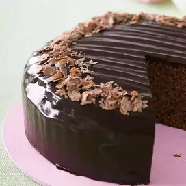

Chocolate Cheese Cake Recipe

Recipe Description
A chocolate cheese cake with melted chocolate
in the center!
Ingredients
- 1 3/4 cup of white sugar
- 1/3 cup of butter
- 1 cup of yogurt
- 1 1/2 cups of all-purpose flour
- 3 eggs
- 1/2 teaspoon of vanilla extract
- 2 teaspoons of baking powder
- 12(1.5 oz) bars milk chocolate candy
- 2 cups of cream cheese
- 3 eggs
- 1/4 cup of confectioners' sugar for dusting
Steps
- Preheat oven to 350 degrees F (175 degrees C).
Oil and flour in a 9 inch pan.
- In a large bowl, cream the butter or margarine and 1 cup sugar.
Beat in 3 eggs. Blend in yogurt. Combine the flour and
baking powder; add to the cream mixture. Stir in 1/4 teaspoon
vanilla. Melt 6 chocolate bars; blend into the batter. Pour batter
into prepared pan.
- Sift flour, baking powder, and salt together in a mixing bowl.
Beat cornmeal mixture, eggs and butter into the flour mixture
until you have a smooth batter, about 1 minute.
- Bake for 30 minutes or until the cake test done. Allow to cool
10 minutes in the pan.
- Cut a hole in the center of the cake that does not go all the
way through the cake. Melt another 6 chocolate bars and
pour it into the hole.
- Beat cream cheese, 3 eggs, 1/4 teaspoon vanilla, and 3/4 cup of sugar
until smooth. Pour over the cake. Bake for 20 minutes.
- Sprinkle confectioners' sugar on top of the cake. Bake until
the sugar melts and browns. Serve.